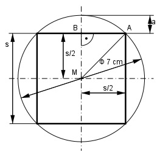

Aufgabe 94 Aus einem 18 cm langen Rundstahl mit einem Durchmesser von 7 cm soll der größtmögliche quadratische Vierkant ausgefräst werden? Wie groß sind die Anstelltiefe a des Fräsers und das Volumen V des fertigen Vierkants?

Satz von Pythagoras im Dreieck MAB: AM = 7 cm/2 = 3,5 cm MA2 = MB2 + AB2 3,52 = (a/2)2 + (a/2)2 = s2/4 + s2/4 = s2/2 |*2 s2 = 24,5 |√ s = 4,95 cm --> s/2 = 4,95/2 cm = 2,475 cm Anstelltiefe a = r - s/2 = = 3,5 cm - 2,475 cm = 1,03 cm V = G * h V = s2 * h = 4,952 cm2 * 18 cm = 441 cm3